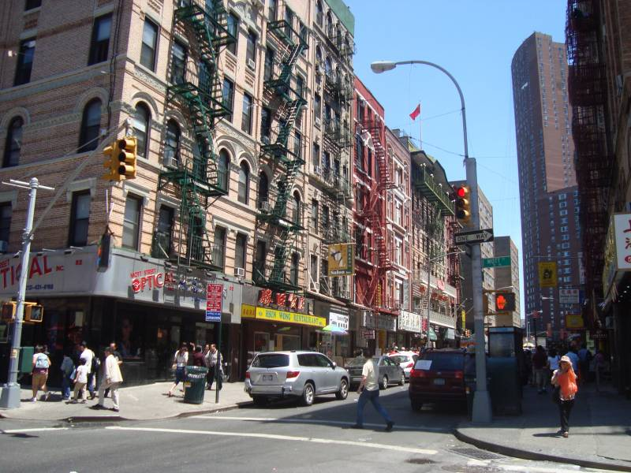
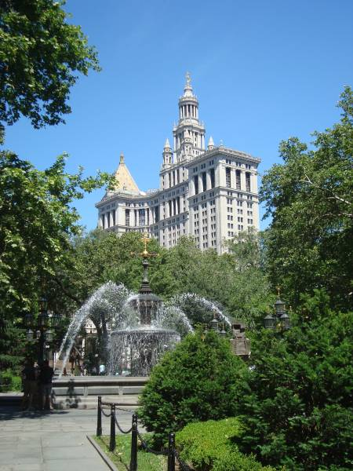
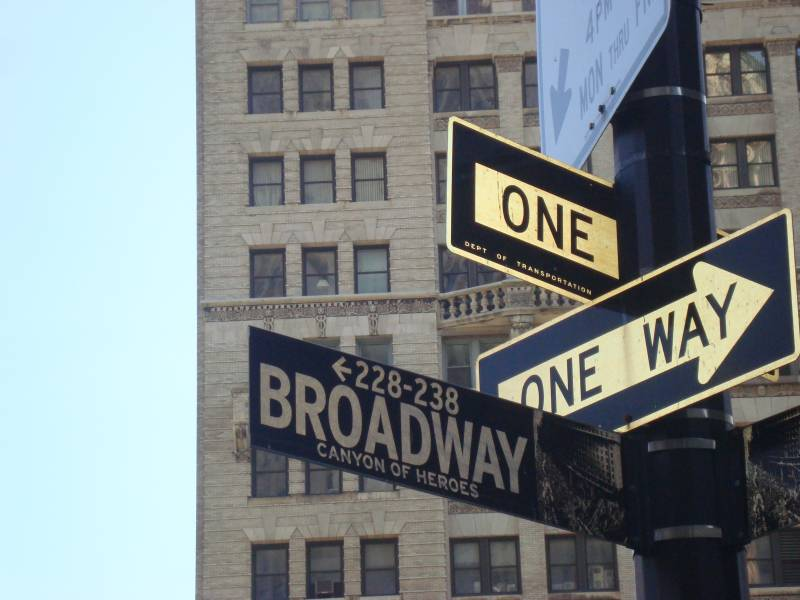

Titulek dnešnímu článku propůjčila jedna písnička slavné kapely Bee Gees a to jednak proto, že byla tím prvním, co jsem ve sluchátkách slyšela, když jsme autobusem vjížděli na půdu Manhattanu…a zadruhé proto, že noci na Broadwayi jsou nám asi souzeny. Krom toho, že se tak jmenuje bostonská ulice, na které máme privát, tady v NY se ubytujeme v China Town v ulici, která je hned za rohem oné pravé a nefalšované slavné Broadwaye :-) !!! Cesta autobusem uteče celkem rychle a příjemně, trvá něco přes 4 hodiny, ale v buse je samozřejmě klimatizace, wifina a co mě překvapí - TICHO :O (nojo, nejedeme žádnou rozhrkanou karosou a o stavu místních dálnic by si naše D1 taky mohla nechat jenom zdát :D…) Ohulím si MP3ku s Bee Gees na max a vychutnávám první pohled na americkou metropoli…takže neslyším bráchu, který do mě dloubá, abych počítala ulice, že za chvíli už začíná Central Park, a směje se, že mluví do pařezu :D…Bus nás vyplivne neznámo kde, prostě jen tak, někde uprostřed Manhattanu, nikde široko daleko žádné nádraží :D. Vydáme se tedy na metro, brácha prozkoumá mapku, co si doma vytiskl, a zavelí…to, co mají v New Yorském metru už se snad ani nedá nazvat klimatizací - to je normální regulerní chladnička :O. Jsem zatraceně ráda, že mám na sobě svetr a ještě palestinu, stejně se klepu a doufám, že už brzo budem vystupovat. Venku je zas oproti tomu neuvěřitelné hic - teda tady ty lidi musí být permanentně nachlazení :O…
To už jsme naštěstí na té “naší” zastávce - Canal street, která si se svým názvem opravdu nezadá, jak s bráchou pobaveně glosujeme :D…smrad je ale podle mě obecně new yorský problém :D…Po výstupu z metra se brácha musí zorientovat, chvíli zkoumá mapku a pak nás vede spletitýmu ulicemi China Town k našemu hotelu. Hotýlek vypadá velmi slušně, ale bohužel jsme tu o 3 hodiny dřív, takže nás ještě nemůžou ubytovat. Naštěstí si můžeme alespoň nechat batožinu na recepci, takže se vzápětí vydáváme prozkoumávat “newyorský svéráz” (Lukův výraz 8-)…rozuměj China Town).

Newyorský svéráz v China Town :D
Po cestě nám vytrávilo, takže naše první kroky směřují k nějakému tomu kusu žvance. Z všudypřítomného pachu rybiny na ulicích mě teda rychle přechází chuť :D, ale brašule nás suverenně vede uličkama a já s nadšením fotím ten velkoměstský “svéráz” :D, ocitáme se totiž opravdu v jiném, zatraceně fotogenickém světě. Všude je rušno a přeplněno, všude se něco prodává nebo nabízí. Zastavíme se u jedné restaurace, která má na dveřích vyvěšený jídelníček, ale brácha nás hned odtáhne, protože tu prý mají “podezřele levno” :D. Nakonec už nás omrzí hledání a přemůže hlad, a tak se usadíme v první slušně vyhlížející restauraci na rohu ulice s úmyslem ochutnat pravou nefalšovanou Čínu :D. Tak trochu čekám, že mi z toho bude blbě, nicméně si na svém kuřeti v sladkokyselé omáčce dost pochutnávám. Naši si dají nějaké nudle a mořské potvory a Luk “výživný” bambus :D, užíráme si navzájem z talířů a musím říct, že nic není vyloženě zlé. Porce jsou ale opravdu poctivé a máme problém se s nima poprat. Abychom vytrávili, vydáme se na procházku po jižním Manhattanu - Luk nám chce ukázat new yorskou radnici a soudy a pak se jdeme podívat na Ground Zero. Tam vpodstatě zatím není nic moc k vidění; místa, kde stála dvojčata, už jsou oplocená a momentálně je tam staveniště, ale můžeme si aspoň prohlédnout plán, na kterém vidíme, co tu jednoho dne vyroste.

Newyorská radnice
To už se nacházíme jenom kousíček od Wall Street. Vyfotíme taťku u NY Stock Exchange a pokračujeme směrem k Brooklynskému mostu, odkud nám brašule slibuje krásný výhled na Manhattan. Nevybereme si pravda zrovna nejlepší chvíli, jsou zrovna 4 hodiny odpoledne, čili pěkná výheň a ty všudypřítomné davy lidí všude okolo…v tomhle městě bych teda fakt moc dlouho nevydržela :D. Když už jsme tu, udělám pár fotek s mrakodrapy, a pak se rozhodneme jít se ubytovat na hotel a hodit si sprchu, protože jsme celí zpocení a utahaní. Cestou ještě přibalíme ledový čaj ve Starbucks a prolezeme několik malých obchůdků na Broadwayi a poté zamíříme rovnou do hotelu.
Z hotelového pokoje ve 13.patře máme krásný výhled na město. Hnedka se s rozběhem vrhnu na měkoučkou postel (teda až poté, co vypnu všudypřítomnou klimatizaci 8-)…) a užívám si lehárko. Brašule se mě vyptává, jestli už jsem ochutnala ten “čaj s kuličkama” - vůbec nevím, o čem to mluví. Prý je to teď v Americe velkej hit a musím to vyzkoušet. Než se naši stihnou osprchovat, skočí někam dolů do ulice pro jeden exponát. Ucucnu si a vzápětí kuličky znechuceně vyplivuju - něco tak odpornýho jsem už dlouho nejedla. Čaj je teda celkem ucházející, ale to, čemu brácha říká “kuličky” by stejně dobře mohl být kousek povařené školní pryže :D s příchutí lékořice. Tfujtajbl, je mi z toho šoufl ještě půl hodiny :D.
Asi za hodinu se vyhrabeme z hotelu zpátky na ulici, ale už se nám nechce trmácet až dolů k Soše svobody. Rozhodneme se nechat si tento program na zítra a teď večer se vypravit na jih Central parku a odtud prolézt až k Broadwayi nejslavnější nákupní třídu v New Yorku - pátou avenue :-). Každé jméno, které ve světě luxusu něco znamená, tady má svůj krámek, takže je to tady samý Gucci, Tiffany a Prada :D. Brašule nám zasvěceně ukazuje, kde se tu dají koupit pravé diamanty :D…Míjíme také nejznámější mrakodrap Empire State Building, před kterým se srocuje dloooouhatánská fronta. No, tenhle zážitek si teda protentokrát asi odpustíme :-). Vracíme se na metro přes uměleckou čtvrť Greenwich village, kde si koupíme něco k pití a vydáme se zpátky do hotelu. Pro dnešek už jsme toho viděli celkem dost a je potřeba, nechat si něco i na zítra.

Nights on Broadway
Naši hnedka na hotelu odpadávají :D, brácha si jde ještě číst a já píšu pohledy a blog. Než se odeberu taky do hajan, vygůglím si adresu místa, které přecejen musím vidět, když už jsem tady v NY…Dakota house na 72. západní ulici…
- Broadway se táhne snad přes celý Manhattan - a my bydleli na jihu, takže jsme okolo nich nešli. Vrahy jsme nepotkali, brašule říkal, že dneska už to tady s tou kriminialitou není tak zlý :D…